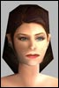

| Pages (2): [1] 2 » |  Last Thread Next Thread Last Thread Next Thread  |
| Author | Thread |
| Corgan Eleet  | The rumor mills are starting and i hear tell that UVC will be wiped from the game when 14.6 hits the fan.. Now you hafta ask yourself one question.. Why would funcom do this?..... First you make All MA crits self only.. sure thats fine then you give us 3 more crit programs to please everyone else... second you add a lvl req to all nano crystals in the game... now that leaves only ma's high enough to get the crystal in 14.4 able to use it before hmm im guessing 195 would be the lvl added to it... so now as a 195 MA myself im seeing something i worked hard to be able to use get taken away from me.. Why you ask? Because people whine that its too strong.. just because they have lower crits that get casted on them... How is a MA supposed to be a "master" of fist combat when they arent able to deal damage like they should... If you take away UVC you take away everything that makes a high lvl MA fun to play.. next you will want to strip us of our + 94 damage buff because people dont like that either.... You hafta draw the line sometime Funcom Dont let people influence everythign that happens in the game... KEEP UVC IN THE GAME!!! and keep the higher player base of MA here after 14.6 comes Corgan Last edited by Corgan on August 3rd, 2002 at 02:39 |
 August 3rd, 2002 02:32 August 3rd, 2002 02:32 | #1 |
| Karuna Leetas  | agreed! as much as i sometimes dislike getting slapped down by a MA making those super crit buffs self only was sufficient. no need to nerf it further imho. |
| August 3rd, 2002 02:34 | #2 |
| Nallepuuh Leetas  | IF that day comes.. THAT is the day i stop playing this game.. IM so fed up with all the **** FC is pulling.. first they nerf us before release and after 9 months they "FIX" us.. and now the gonna nerf us again?? they are gonna make healing in pvp be 50% (that i can live with, docs beeing overpowered.. and they drag us down with them).. but take away our crits.. i meen common !... now what the hell are we supposed too be doin in this game ? puppets in pvp too be cannon fodder? Hope this is just rumors.. and not too be actually true... I can say that the day crit nerf comes.. about 75% off the MA community will vanish.. I have played this char for 114 days now.. and i have taken a lot off ****.. but iff this goes down im out of here.. maybe try another char.. but i dont know if im gonna spend another 100 days on a char that wont be the same as my old lovely MA.. :,( |
| August 3rd, 2002 02:51 | #3 |
| Corgan Eleet | Bump for awareness |
| August 3rd, 2002 03:34 | #4 |
| TOFU Leetas | well if they nerf uvc Funcom is basicly saying traders and engies are better martial artists then true mas. if our best crit buff is 7 same as engies and traders can use the ma is doomed. they can achieve much higher ma skill then an actual ma and if they have the same crit% they will do more dmg then an ma with fists. they better make 4 fists of kali self only like it was intended and quit letting engies traders use our best ma buff. fix it fc 4 fists is bugged i mean i got to stand within 1 meter to cast on others that = a bug. Another thing with all the talk of nerfing ref/bracers our change dmg type fist line wont help much at all atleast in pvp. Im cool with a crit nerf as long as engies/traders get their fists nerfed, and doctors,mps,crats, get a severe offensive nerf, why is it a proffession with all dark blue skills "meant to be unskilled at the wep or skill" can do so much dmg, that is where the real fix lies. I know with the evades fix this was helped some, but how does a doctor with 800 attack rating crit my ma who has 1113 duck? I would like to see an end to the gun in hand = good dmg, the way the game is setup now its like taking some avg joe off the street hand him an assault rifle and he is an instant marksman no skill required. but yet a soldier who has trained and is geneticly designed to use the wep doesnt do much more dmg. that makes lots of sense..... |
| August 3rd, 2002 07:41 | #5 |
| Cyberbob Leetas  | Well there are and will always be a lot of rumors going on, and it would be completely nonsense to nerf UVC. What they are doing now is getting most profsssions a dmg boost, and from what i heard from Fc last they were using shotguns as the template for this. Hence as we dont do thoose 10k crits neither the 5k ones if you count dimach we would be not a little but VERY gimped at high lvls. As ma's we just have to see what comes like any other profession. If it happens i for sure wont be playing as an ma anymore and i am doubtfull to wheras ill play the game at all due to the poor customer communication this company has proved to have. I advise ANY fc employee play an ma in pvp versus diffrent profsssions the following they will take at their same lvl is crats, engis, anf's and maybe soldiers. The first too due to pet pathing the two others are more of a close call. Please correct me if i am wrong. And btw nerf healing i suggest the following in pvp nerf drains ffs, after oe patch its impossible to fight a guy that can drain and root you. A story comes to mind with a guy that killed a trader with a ql 200 krys knife comes to mind.... but FC prob dont know what a krys is. Sorry for flaming but i have experieced for so long what it means to be a gimp that i know i wont put up with it again. __________________________________ Cyberbob your friendly neighbourhood ma torching a town near you  |
| August 3rd, 2002 08:28 | #6 |
| Sandtrap Leetas  | I swear, if this is true then there's only one explination. Funcom if actively trying to kill their playerbase. -Sand |
| August 3rd, 2002 09:13 | #7 |
| cold Supa Leet  | People going ballistic over rumors again.... hehe |
| August 3rd, 2002 09:44 | #8 |
| MaDezzie Soleet  | Re: 14.6 and UVC quote:Just where exactly did you hear that? |
| August 3rd, 2002 11:55 | #9 |
| Hajkster Supa Leet | havent heard anything from community about this... gotta ask you to.. where did you hear it? |
| August 3rd, 2002 13:16 | #10 |
| ethernal3 Supa Leet  | Oh, not only is it *official* that they are talking UVC away, they are also changing damage to 1-1(1) on the following weapons. Novaflows Flashpoints Division 9's Custom Heavy Supressers Sol Chromis Mausser Chemical Streamers Steal Beams Hammers Native Staves Lead Pipes V-3's X-3's Ithaca's Krutts Ithaca Kii's (pistols) Among a few others. Also, all buffs are now self-only. ~Chris (can anyone say "RUMOR"? Are we all little schoolgirls?) |
| August 3rd, 2002 13:35 | #11 |
| Mercatura Supa Leet  | Trader heals started as a whine, then rumor, then nerf. Happened so fast it mostly skipped the rumor part though. Whine --> Rumor --> Nerf = FC Devs |
| August 3rd, 2002 13:46 | #12 |
| Cz | /me suppresses a tiny urge to add a sarcastic post (and mostly because Megabio already did)  I have heard nothing about a nerf to UVC. I'll check for sure when I get to work on Monday. Feel free to remind me (IRC or e-mail) if you haven't heard anything by the end of Monday.  |
| August 3rd, 2002 14:09 | #13 |
| Scorus Supa Leet | There are enough things in the game for people to worry about and complain about without getting into unsubstantiated rumor. Scorus |
| August 3rd, 2002 14:26 | #14 |
| Corgan Eleet | You hafta ask yourself this though... When hasnt a rumor about something bad happened actually come true? Ive seen this happen so many times that i figure Hey why not head the whiners off at the pass and make sure it doesnt happen... Sometimes you hafta act before anything gets started to insure that it wont happen... call it somewhat of an advanced reaction to things to come |
| August 3rd, 2002 16:19 | #15 |
| Cz | Took a bike ride, and decided to drop by work for a min to check up on a few things. So I made searches on criticals, MAs and nanos in our database, and could find no task which mentioned removing or nerfing the UVC. Guess it's just a rumor then, so the answer to your question, Corgan... quote:...is "we wouldn't."  We'll make sure to let the Professionals know if a change like this is to happen to any profession. Hopefully, we're never gonna surprise you with a change of such nature. Anyhow, I'm off again. C'ya Monday. |
| August 3rd, 2002 16:24 | #16 |
| Corgan Eleet | I didnt say it was going oto happen i said it was a rumor =) just making 100% sure about it and well i guess i did that thanx for the reply =) |
| August 3rd, 2002 21:14 | #17 |
| Nallepuuh Leetas | Phew! *Phew* Now thats a relief.. jesus i was actually getting worried here.. Thank you CZ for the quick answers Your tha man |
| August 3rd, 2002 23:39 | #18 |
| Ztarv Leet  | Yeah, thanks for eliminating that ugly rumour CZ. *phew* such a nerf would have taken away all my motivation for ever getting those last few levels to 200. |
| August 4th, 2002 00:13 | #19 |
| Intrepid Supa Leet  | quote:Yes assuming you don't count claws which traders and engies can't use and you remove all MA only crit buffs and you change the psy init to dark blue because you know the average MA hits 50% more often with no claw and 125% more often with a claw(rough estimates) and maybe give engies heals and green evades as well and green body dev then you MIGHT have a argument. MAs are BY FAR the BEST prof in the game right now so you guys have the absolute least to ***** about even if they do nerf UVC. STFU n00B is all i have to say to you. Man i can't wait til the day my eng at level 160 is even close to a MA of equal level. |
| August 4th, 2002 03:22 | #20 |
| Pages (2): [1] 2 » | The saved copy (Funcom's forum archive, saved by the Wayback Machine in 2025) |
All times are GMT.